ЮЖНЫЙ ФЕДЕРАЛЬНЫЙ УНИВЕРСИТЕТ
Институт компьютерных технологий и информационной безопасности
ВЫПУСКНАЯ КВАЛИФИКАЦИОННАЯ РАБОТА
на тему:
Информационная система управления знаниями сотрудников в
ИТ-компании
Студент: Журавлев Владислав Евгеньевич
КТбо4-3
Руководитель: Грищенко Андрей Сергеевич
Старший преподаватель кафедры САиТ
Таганрог 2019 г.
Организационная структура
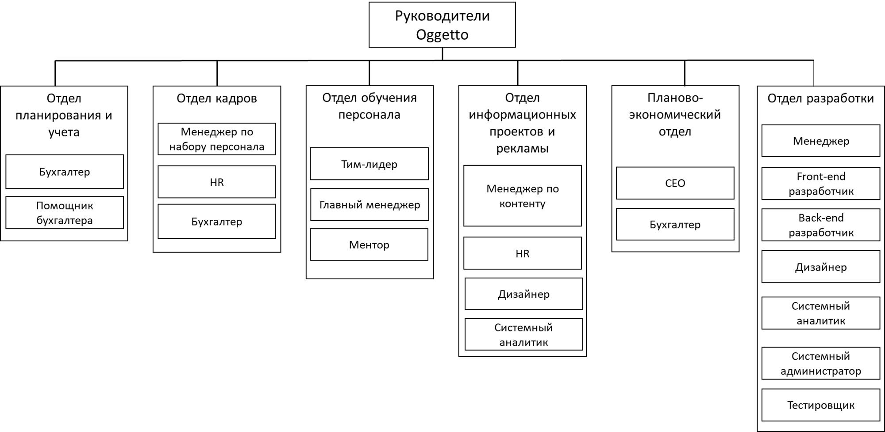Организационная структура
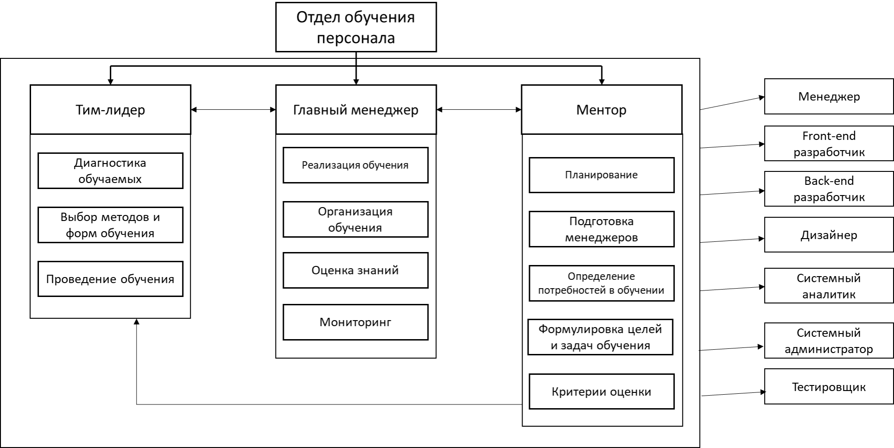Сценарий бизнес-процессов
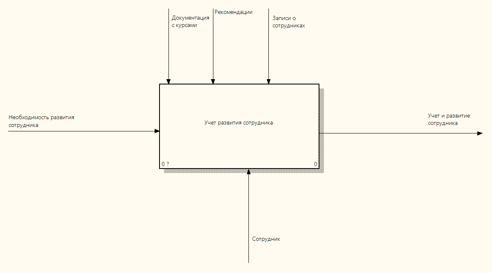Сценарий бизнес-процессов
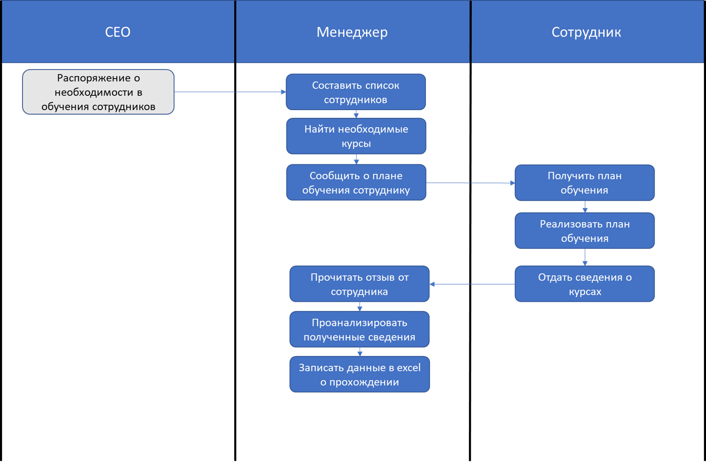Математическое моделирование
 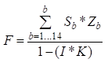
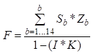
Компания затратит 676271 рублей и менеджер потратит 213 часов.
Методы анализа и оптимизации
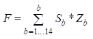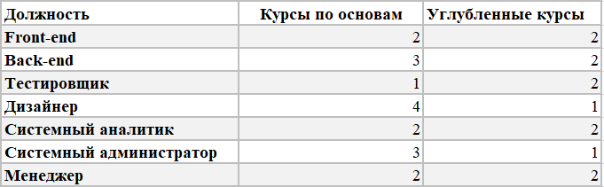
Затраты уменьшаются на 69% процентов. Временные затраты менеджера сокращаются на 143 часа.
Методы анализа и оптимизации
Методы анализа и оптимизации
Изменения бизнес-процессов:
• Обнаружение новой технологии;
• Обнаружение потребности в новой технологии;
• Выбор сотрудников для обучения;
• Обучение.
Сравнительный анализ
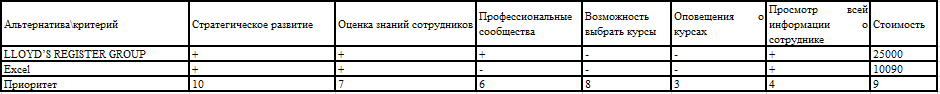 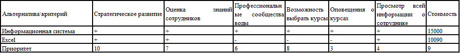Диаграммы
Архитектура
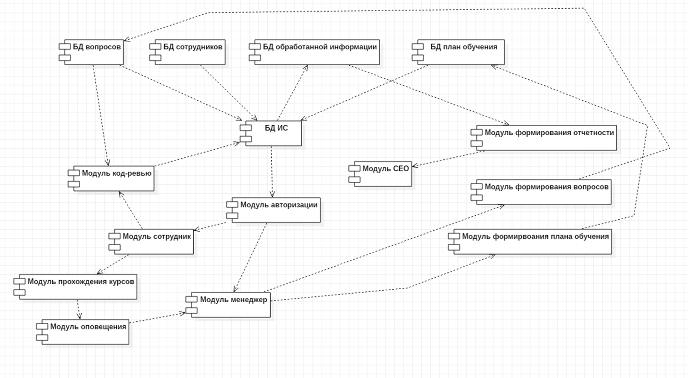Логическая модель
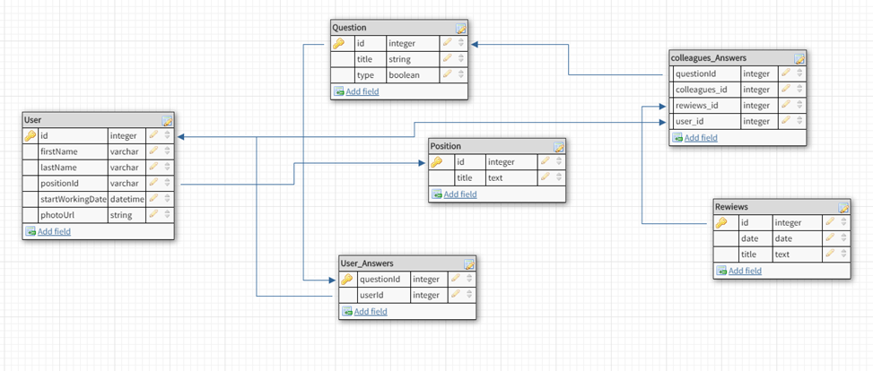Экранные формы
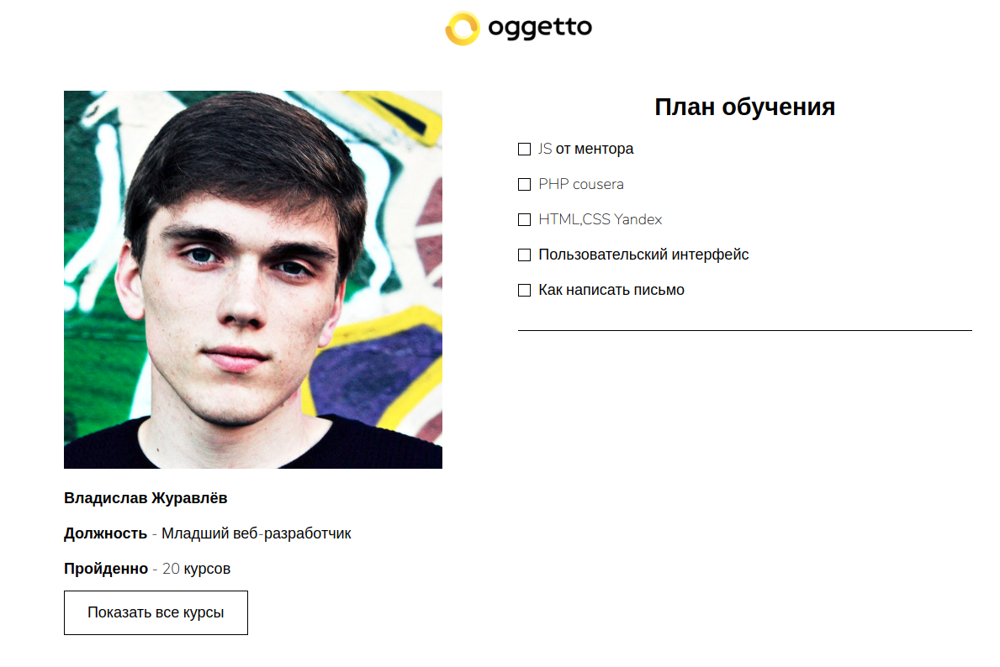Экранные формы
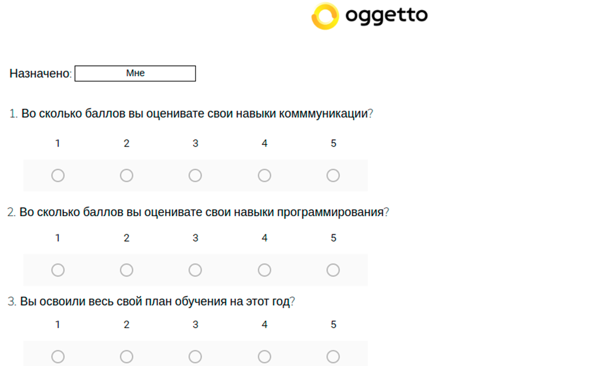Технико-экономическое обоснование
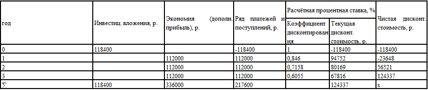Безопастность ЧМВ
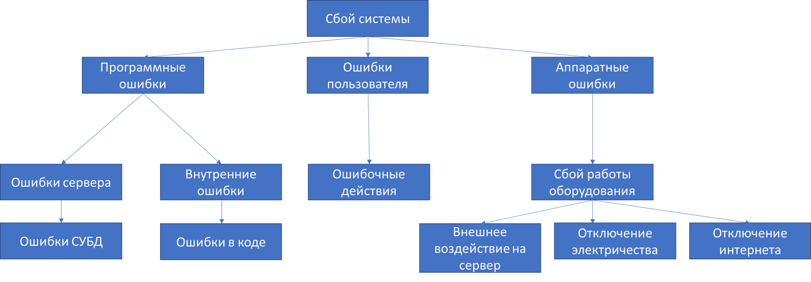Заключение
При выполнении ВКР были поставлены и реализованы следующие задачи:
• Описать характеристики объекта исследования;
• Составить организационную и функциональную структуру компании;
• Построить математическую модель компании;
• Выявить бизнес-процессы;
• Оптимизировать бизнес-процессы;
• Провести сравнительный анализ case-средств;
• Произвести моделирование информационной системы;
• Спроектировать информационную систему;
• Сравнить информационную систему с аналогами;
• Сформировать требования к системе;
• Выбрать и описать архитектуру;
• Выбрать программные средства для реализации;
• Выбрать технические средства;
• Реализовать информационную систему;
• Описать функционирование разработанной информационной системы;
• Определить социальную значимость;
• Произвести технико-экономическое расчет;
• Определить безопасность и экологичность работы